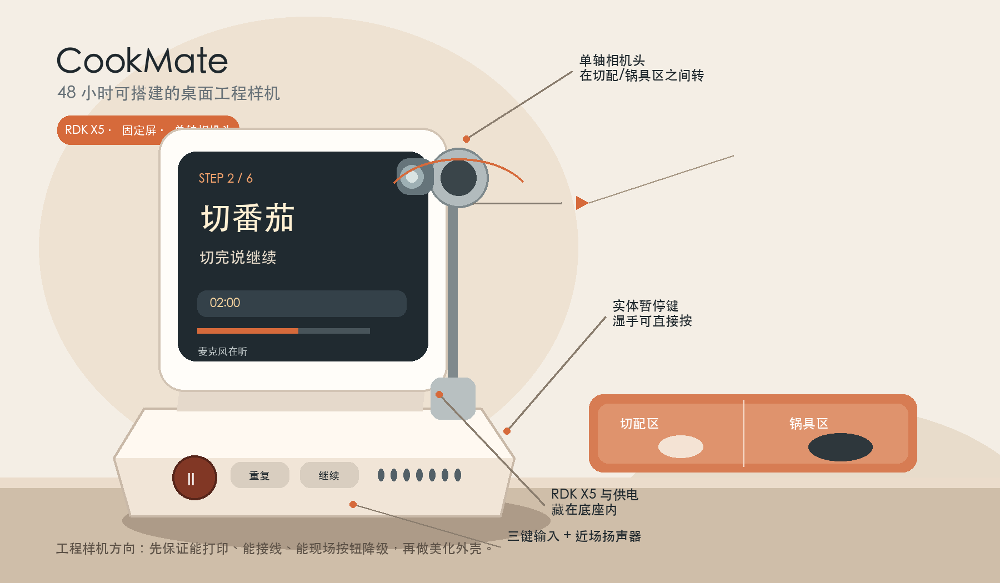
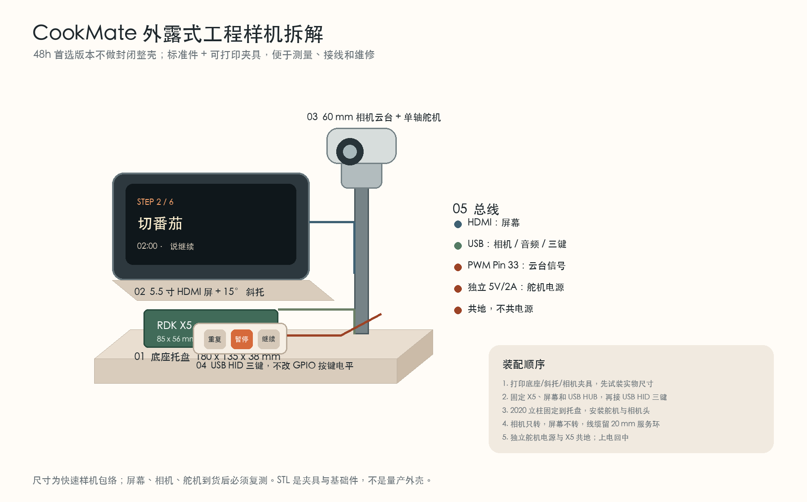
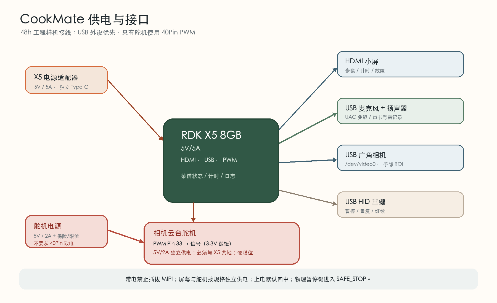

5 个快速打印件
底座托盘、屏幕框、立柱夹、舵机/相机座和三键面板。
固定屏幕面向用户，单轴相机头在切配区与锅具区之间转动。用户说“继续、重复、暂停”，语音失败就按实体键；RDK X5 在本地完成状态、计时和失败降级。

不是自动炒菜机。不是会说话的电子菜谱。
整块屏幕转头会让 HDMI 线、重量和重心都变复杂。V2 改成固定屏与独立相机云台，48 小时更容易打印、接线和维修。

底座托盘、屏幕框、立柱夹、舵机/相机座和三键面板。
A4 100% 打印，在动孔之前确认屏幕、X5、按键和立柱位置。
环境、相机、声卡和受限 PWM 舵机分别验证，不靠网页冒充。
下面是状态机模拟，用来预演屏幕行为；机器人本体仍需真机装配与测试。
把番茄切成八瓣，切完说继续。
我在等你说“继续”。
按真实实体键对应的动作
这种分配能让 48 小时联调更可控。舵机使用独立 5V/2A 电源和 X5 共地，实体键作为 USB HID 输入。

X5 5V/5A 独立供电
屏幕 按模块规格独立供电
舵机 只接 Pin 33 信号，不从板上取电
所有地 共地但电源隔离
没有这三项，不开始做完整外观外壳。
X5、屏幕、相机、声卡、三键、舵机分别可用；真实设备节点和照片留证。
三键完成六步菜谱；暂停冻结计时；断电重启可恢复。
语音失败切按钮；视觉不确定不推进；相机可覆盖两个操作区。
不通过就关闭视觉或舵机，保留屏幕、按钮、计时和本地状态。
设备不控火、不拿刀、不碰食材，也不根据普通摄像头判断熟度或食品安全。视觉只判断手部在哪个固定区域，关键步骤必须由用户确认。
这并非功能缩水，而是保证两位 AI 工程师、两位硬件/产品成员能把时间和预算放在一个能重复的闭环上。
不控火用户操作炉具
不判熟度普通 RGB 信息不足
不自动推进视觉只提示
不假装实机设计、模拟、实体分开标注
表单正文控制在约 800 字：做什么实体、评委操作什么、RDK 负责什么、AI 不做什么、失败如何降级。附件使用一页方案卡、硬件仓库或项目页，而不是把 12 份文档全部塞进链接。
800 字实体闭环
一页硬件方案卡
STL / BOM / 接线 / 脚本
项目页或 GitHub/Gitee